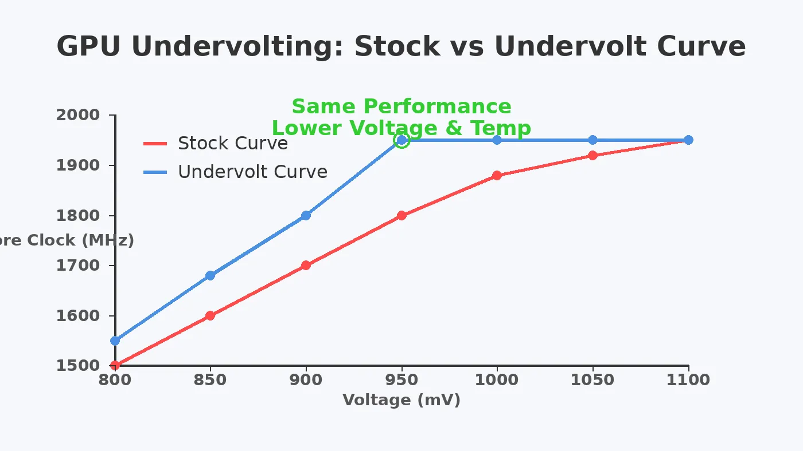

How to Undervolt Your GPU: Lower Temps, Same FPS
Modern graphics cards are tuned out of the box to run at higher voltages than strictly necessary to ensure stability for every piece of silicon. Undervolting is the process of lowering this voltage while maintaining the same target clock speed. The result? A cooler, quieter card that draws less power without sacrificing gaming performance.

What is GPU Undervolting?
Undervolting is simply restricting the maximum voltage your GPU is allowed to pull at a given frequency. Out of the box, manufacturers apply generous voltage limits to guarantee that even the worst silicon yields will run stably at advertised speeds. If you have an average or good chip, it requires less voltage to hit those same speeds.
When you lower the voltage, the graphics card produces less heat. Because modern GPUs dynamically boost their clocks based on thermal headroom, running cooler means the card is less likely to hit thermal throttling limits. This can lead to more stable frame rates and quieter fans.
Is Undervolting Safe?
Yes. Undervolting is entirely safe. Unlike overclocking with extra voltage—which increases heat and can degrade silicon over time—undervolting reduces thermal stress. The worst-case scenario during testing is that you lower the voltage too much for the target frequency, causing the game to crash or the driver to reset. A quick system reboot or restarting the overclocking software resolves this instantly, with zero risk of physical damage.
What You Need to Get Started
- MSI Afterburner: The industry standard tool for tweaking GPU voltage and clocks. It works with almost all NVIDIA and AMD cards.
- A Benchmark Tool: Software like Unigine Superposition, 3DMark Time Spy, or a demanding built-in game benchmark (e.g., Cyberpunk 2077) to test stability.
- Hardware Monitoring: Use the overlay in MSI Afterburner to monitor Core Clock (MHz), GPU Temperature, and GPU Voltage (mV). Or, check out our guide on how to check PC bottlenecks and usage.
Step-by-Step Guide to Undervolting
Step 1: Establish a Baseline
Before tweaking, run your chosen benchmark at stock settings. Note down the maximum core clock your GPU hits, the maximum temperature, and the voltage it settles at under load. You can also use our PC Bottleneck Calculator to understand if your GPU is fully utilized in your current games.
Step 2: Open the Voltage/Frequency Curve
Open MSI Afterburner and press Ctrl + F. This opens the Voltage/Frequency curve editor. The X-axis represents Voltage (mV) and the Y-axis represents Core Clock (MHz).
Step 3: Select a Target Voltage and Frequency
Look at the baseline you established. A common starting point for RTX 3000/4000 series cards is around 875mV to 925mV, targeting a frequency near your observed stock boost clock (e.g., 1850MHz to 1950MHz). Find the corresponding voltage point on the X-axis.
Step 4: Adjust the Curve
- Drag the point at your chosen target voltage up to your target frequency.
- Hold down the
Shiftkey, click the space just to the right of your adjusted point, and drag your mouse to the far right of the graph to highlight all subsequent points. - Press
Enterto flatten the rest of the curve. Alternatively, you can click the main Afterburner window and hit "Apply" (the checkmark icon). This tells the GPU: "Never exceed this voltage, but try to hit this frequency."
Step 5: Test for Stability
Run your benchmark again. If it completes without crashing or artifacting, you have a successful undervolt! You should notice lower temperatures and lower fan speeds.
Troubleshooting Instability
If your game crashes or freezes during testing, it means the GPU did not have enough voltage to maintain the target frequency. You have two choices:
- Increase the voltage: Move your target point one step to the right on the curve (e.g., from 900mV to 925mV) and flatten the rest of the curve again.
- Decrease the target clock: Lower the target frequency by 15-30MHz at your current voltage point.
Repeat the testing process until you find a stable point. Remember to save your stable profile in MSI Afterburner and set it to apply on startup once you are confident it is rock solid.
Undervolting vs. Underclocking vs. Power Limiting
It's important to understand the distinctions between these terms:
- Undervolting: Lowering voltage while maintaining stock clock speeds. (Goal: Same performance, lower heat/power).
- Underclocking: Deliberately lowering the core clock speed, usually resulting in a performance loss.
- Power Limiting: Simply dragging the "Power Limit" slider down in Afterburner. The GPU will throttle its clock speeds and voltage aggressively to stay under the wattage cap. While easy, it often results in worse 1% lows and stuttering compared to a manual undervolt curve.
Conclusion
Undervolting is one of the most beneficial tweaks you can apply to a modern PC, right alongside enabling XMP (see how to enable XMP or EXPO). It requires a bit of patience to test for stability, but the reward of a cooler, quieter system that performs identically to stock is well worth the effort. For a complete system overview, run your parts through the Free PC Bottleneck Calculator to ensure the rest of your build is balanced.
Frequently Asked Questions
Is undervolting a GPU safe?
Yes, undervolting is completely safe. Unlike overvolting, supplying less voltage cannot damage your hardware. The worst that can happen is a game crash or system reboot if the voltage is set too low for a given frequency.
Will undervolting lower my FPS?
If done correctly, undervolting will not lower your FPS. In fact, by reducing temperatures and preventing thermal throttling, it can provide more stable and sometimes even slightly higher average frame rates.
Can I undervolt a laptop GPU?
Yes, undervolting is especially beneficial for laptop GPUs because they are constrained by limited cooling and strict power limits. Reducing voltage helps the laptop maintain higher clock speeds without hitting thermal limits.